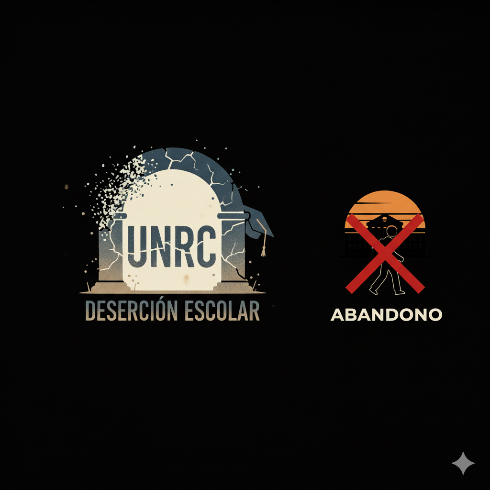
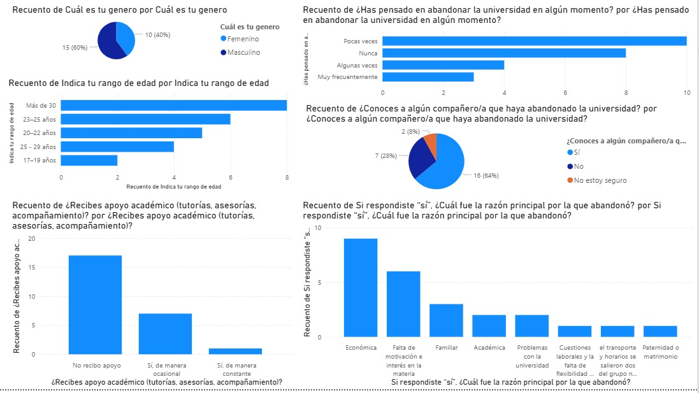

Análisis Deserción Escolar UNRC
Una plataforma dedicada a visualizar y comprender las causas, consecuencias y soluciones de la deserción escolar a través de datos y análisis.

¿Qué es la Deserción Escolar?
La deserción escolar es el abandono del sistema educativo por parte de los estudiantes, antes de finalizar el grado o nivel que estaban cursando. Este fenómeno tiene profundas implicaciones tanto para el individuo como para la sociedad, limitando oportunidades de desarrollo y perpetuando ciclos de pobreza.
Factores y Consecuencias
Causas Principales
Factores socioeconómicos, problemas familiares, falta de interés y bajo rendimiento académico son algunas de las causas más comunes que llevan a los jóvenes a abandonar sus estudios.
Leer másImpacto a Largo Plazo
Las consecuencias incluyen menores ingresos, mayores tasas de desempleo, problemas de salud y una participación cívica reducida, afectando la calidad de vida y el desarrollo social.
Leer másPosibles Soluciones
Implementar programas de tutoría, becas, apoyo psicológico y mejorar la relevancia de los planes de estudio son estrategias clave para mitigar la deserción escolar.
Leer másEstadísticas Destacadas
Tasa Nacional
La tasa de abandono escolar en educación superior ha mostrado una ligera disminución, pero sigue siendo un desafío importante para el sistema educativo del país.
Factores de Riesgo
Jóvenes de comunidades rurales y de bajos ingresos tienen hasta tres veces más probabilidades de abandonar la escuela en comparación con sus pares de zonas urbanas.
Impacto de Programas
Los programas de becas y apoyo han demostrado reducir la deserción hasta en un 25% en las poblaciones beneficiadas, subrayando su efectividad.

Escanea para obtener más recursos y datos sobre nuestro análisis.
Un proyecto dedicado a la visualización de datos para el cambio social.